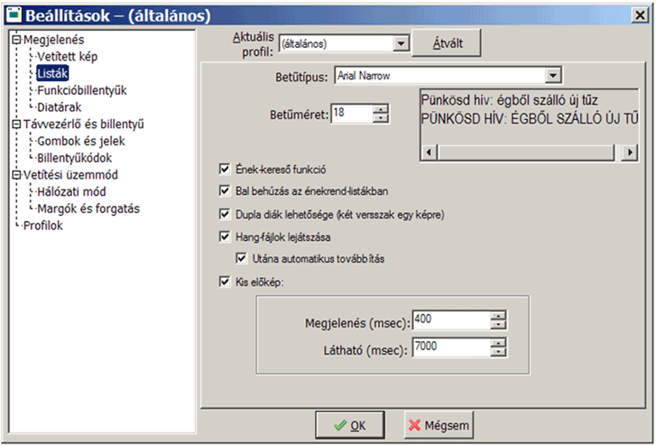

Beállítások:
Az eddig megismerteket saját igényeinkhez igazíthatjuk. A szokásos [Beállít] gombot kell megnyomni a főablakon.
A jobboldali képen a "Listák" sort választva a következő beállításaink lehetnek (fentről lefelé):
- Betűtípus és betűméret megadása. Az Arial Narrow jól olvasható és keskeny, de a jobboldali feliraton ellenőrizhetjük a megjelenést
és minden ékezetes betű meglétét.
- Az "Ének-kereső funkció" kikapcsolható (ekkor a sor elejét elég gyorsan gépelve a megfelelő helyre ugrik a kijelölés).
- "Bal behúzás az énekrend-táblában": e nélkül minden sorban a diatár- és éneknév is megjelenik.
- "Dupla diák lehetősége": ez a funkció is kikapcsolható.
- "Hang-fájlok lejátszása": csak ha szeretnénk a diák alá az énekek kíséretét a programmal lejátszatni
- "Utána automatikus továbbítás": a versszakok között automatikusan vált a program a zene lejátszása után
- "Kis előkép": a sárga előkép megjelenési és eltűnési paraméterei megadhatók.
Fenti beállítások igény szerint minden profilra (tehát minden külön felhasználóra) egyenként megadhatók.
